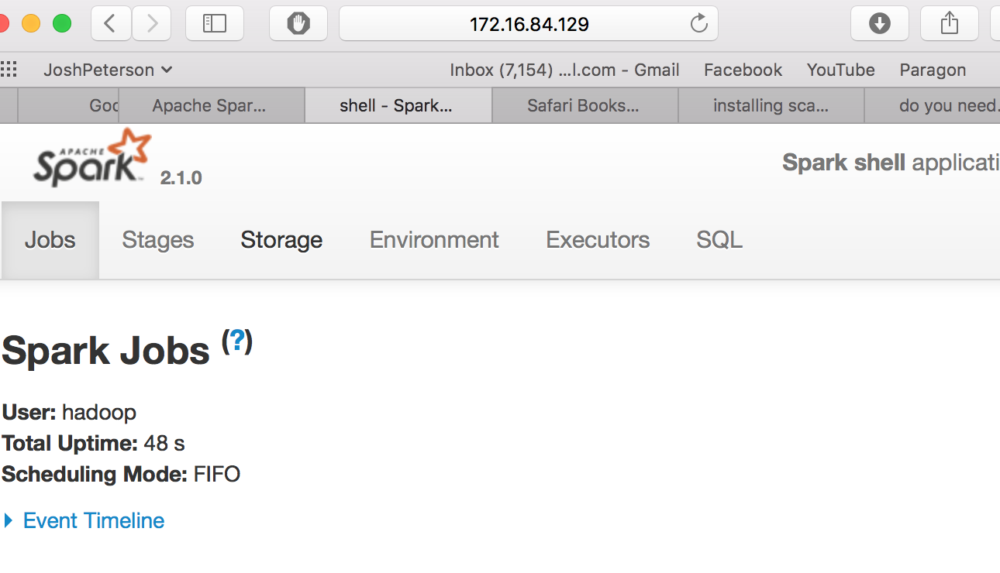

<!DOCTYPE html PUBLIC "-//W3C//DTD XHTML 1.0 Transitional//EN"
  "http://www.w3.org/TR/xhtml1/DTD/xhtml1-transitional.dtd">


<html xmlns="http://www.w3.org/1999/xhtml">
  <head>
    <meta http-equiv="Content-Type" content="text/html; charset=utf-8" />
    
    <title>Week 6+ SparkOnMac &#8212; Data Science 1 documentation</title>
    
    <link rel="stylesheet" href="../_static/alabaster.css" type="text/css" />
    <link rel="stylesheet" href="../_static/pygments.css" type="text/css" />
    
    <script type="text/javascript">
      var DOCUMENTATION_OPTIONS = {
        URL_ROOT:    '../',
        VERSION:     '1',
        COLLAPSE_INDEX: false,
        FILE_SUFFIX: '.html',
        HAS_SOURCE:  true,
        SOURCELINK_SUFFIX: '.txt'
      };
    </script>
    <script type="text/javascript" src="../_static/jquery.js"></script>
    <script type="text/javascript" src="../_static/underscore.js"></script>
    <script type="text/javascript" src="../_static/doctools.js"></script>
    <script type="text/javascript" src="https://cdn.mathjax.org/mathjax/latest/MathJax.js?config=TeX-AMS-MML_HTMLorMML"></script>
    <link rel="index" title="Index" href="../genindex.html" />
    <link rel="search" title="Search" href="../search.html" />
    <link rel="next" title="Week 7 Mahout" href="week7mahout.html" />
    <link rel="prev" title="Week6 Spark" href="week6spark.html" />
   
  <link rel="stylesheet" href="../_static/custom.css" type="text/css" />
  
  
  <meta name="viewport" content="width=device-width, initial-scale=0.9, maximum-scale=0.9" />

  </head>
  <body role="document">
  

    <div class="document">
      <div class="documentwrapper">
        <div class="bodywrapper">
          <div class="body" role="main">
            
  <div class="section" id="week-6-sparkonmac">
<h1>Week 6+ SparkOnMac<a class="headerlink" href="#week-6-sparkonmac" title="Permalink to this headline">¶</a></h1>
<p>by Josh Peterson</p>
<div class="section" id="installing-hadoop">
<h2>Installing hadoop<a class="headerlink" href="#installing-hadoop" title="Permalink to this headline">¶</a></h2>
<div class="admonition note">
<p class="first admonition-title">Note</p>
<p class="last">Directiosn came from <a class="reference external" href="https://dtflaneur.wordpress.com/2015/10/02/installing-hadoop-on-mac-osx-el-capitan/">https://dtflaneur.wordpress.com/2015/10/02/installing-hadoop-on-mac-osx-el-capitan/</a></p>
</div>
<p>Do the following:</p>
<div class="highlight-default"><div class="highlight"><pre><span></span><span class="n">brew</span> <span class="n">search</span> <span class="n">hadoop</span>
<span class="n">brew</span> <span class="n">install</span> <span class="n">hadoop</span>
</pre></div>
</div>
<p>STEP 3: Configure Hadoop:</p>
<p>Edit hadoop-env.sh, the file can be located at //usr/local/Cellar/hadoop/2.7.3/libexec/etc/hadoop/ where 2.6.0 is the hadoop version. Change the line:</p>
<div class="highlight-default"><div class="highlight"><pre><span></span><span class="n">cd</span> <span class="o">/</span><span class="n">usr</span><span class="o">/</span><span class="n">local</span><span class="o">/</span><span class="n">Cellar</span><span class="o">/</span><span class="n">hadoop</span><span class="o">/</span><span class="mf">2.7</span><span class="o">.</span><span class="mi">3</span><span class="o">/</span><span class="n">libexec</span><span class="o">/</span><span class="n">etc</span><span class="o">/</span><span class="n">hadoop</span><span class="o">/</span>
<span class="n">export</span> <span class="n">HADOOP_OPTS</span><span class="o">=</span><span class="s2">&quot;$HADOOP_OPTS -Djava.net.preferIPv4Stack=true&quot;</span>

<span class="n">to</span>


<span class="n">export</span> <span class="n">HADOOP_OPTS</span><span class="o">=</span><span class="s2">&quot;$HADOOP_OPTS -Djava.net.preferIPv4Stack=true -Djava.security.krb5.realm= -Djava.security.krb5.kdc=&quot;</span>
</pre></div>
</div>
<p>Edit Core-site.xml, The file can be located at /usr/local/Cellar/hadoop/2.7.3/libexec/etc/hadoop/core-site.xml add below config:</p>
<div class="highlight-default"><div class="highlight"><pre><span></span><span class="o">&lt;</span><span class="nb">property</span><span class="o">&gt;</span>
<span class="o">&lt;</span><span class="n">name</span><span class="o">&gt;</span><span class="n">hadoop</span><span class="o">.</span><span class="n">tmp</span><span class="o">.</span><span class="n">dir</span><span class="o">&lt;/</span><span class="n">name</span><span class="o">&gt;</span>
<span class="o">&lt;</span><span class="n">value</span><span class="o">&gt;/</span><span class="n">usr</span><span class="o">/</span><span class="n">local</span><span class="o">/</span><span class="n">Cellar</span><span class="o">/</span><span class="n">hadoop</span><span class="o">/</span><span class="n">hdfs</span><span class="o">/</span><span class="n">tmp</span><span class="o">&lt;/</span><span class="n">value</span><span class="o">&gt;</span>
<span class="o">&lt;</span><span class="n">description</span><span class="o">&gt;</span><span class="n">A</span> <span class="n">base</span> <span class="k">for</span> <span class="n">other</span> <span class="n">temporary</span> <span class="n">directories</span><span class="o">.&lt;/</span><span class="n">description</span><span class="o">&gt;</span>
<span class="o">&lt;/</span><span class="nb">property</span><span class="o">&gt;</span>
<span class="o">&lt;</span><span class="nb">property</span><span class="o">&gt;</span>
<span class="o">&lt;</span><span class="n">name</span><span class="o">&gt;</span><span class="n">fs</span><span class="o">.</span><span class="n">default</span><span class="o">.</span><span class="n">name</span><span class="o">&lt;/</span><span class="n">name</span><span class="o">&gt;</span>
<span class="o">&lt;</span><span class="n">value</span><span class="o">&gt;</span><span class="n">hdfs</span><span class="p">:</span><span class="o">//</span><span class="n">localhost</span><span class="p">:</span><span class="mi">9000</span><span class="o">&lt;/</span><span class="n">value</span><span class="o">&gt;</span>
<span class="o">&lt;/</span><span class="nb">property</span><span class="o">&gt;</span>
</pre></div>
</div>
<p>Edit mapred-site.xml, The file can be located at /usr/local/Cellar/hadoop/2.7.3/libexec/etc/hadoop/mapred-site.xml and by default will be blank  add below config:</p>
<div class="highlight-default"><div class="highlight"><pre><span></span><span class="o">&lt;</span><span class="n">configuration</span><span class="o">&gt;</span>
 <span class="o">&lt;</span><span class="nb">property</span><span class="o">&gt;</span>
  <span class="o">&lt;</span><span class="n">name</span><span class="o">&gt;</span><span class="n">mapred</span><span class="o">.</span><span class="n">job</span><span class="o">.</span><span class="n">tracker</span><span class="o">&lt;/</span><span class="n">name</span><span class="o">&gt;</span>
  <span class="o">&lt;</span><span class="n">value</span><span class="o">&gt;</span><span class="n">localhost</span><span class="p">:</span><span class="mi">9010</span><span class="o">&lt;/</span><span class="n">value</span><span class="o">&gt;</span>
 <span class="o">&lt;/</span><span class="nb">property</span><span class="o">&gt;</span>
<span class="o">&lt;/</span><span class="n">configuration</span><span class="o">&gt;</span>
</pre></div>
</div>
<p>Edit hdfs-site.xml, The file can be located at /usr/local/Cellar/hadoop/2.7.3/libexec/etc/hadoop/hdfs-site.xml add:</p>
<div class="highlight-default"><div class="highlight"><pre><span></span><span class="o">&lt;</span><span class="n">configuration</span><span class="o">&gt;</span>
 <span class="o">&lt;</span><span class="nb">property</span><span class="o">&gt;</span>
  <span class="o">&lt;</span><span class="n">name</span><span class="o">&gt;</span><span class="n">dfs</span><span class="o">.</span><span class="n">replication</span><span class="o">&lt;/</span><span class="n">name</span><span class="o">&gt;</span>
  <span class="o">&lt;</span><span class="n">value</span><span class="o">&gt;&lt;/</span><span class="n">value</span><span class="o">&gt;</span>
 <span class="o">&lt;/</span><span class="nb">property</span><span class="o">&gt;</span>
<span class="o">&lt;/</span><span class="n">configuration</span><span class="o">&gt;</span>
</pre></div>
</div>
<p>To simplify life edit a ~/.base_profile and add the following commands. By default ~/.bash_profile might not exist:</p>
<div class="highlight-default"><div class="highlight"><pre><span></span><span class="n">alias</span> <span class="n">hstart</span><span class="o">=&lt;</span><span class="s2">&quot;/usr/local/Cellar/hadoop/2.7.3/sbin/start-dfs.sh;/usr/local/Cellar/hadoop/2.6.0/sbin/start-yarn.sh&quot;</span><span class="o">&gt;</span>
<span class="n">alias</span> <span class="n">hstop</span><span class="o">=&lt;</span><span class="s2">&quot;/usr/local/Cellar/hadoop/2.7.3/sbin/stop-yarn.sh;/usr/local/Cellar/hadoop/2.6.0/sbin/stop-dfs.sh&quot;</span><span class="o">&gt;</span>
</pre></div>
</div>
<p>and source it:</p>
<blockquote>
<div>source ~/.bash_profile</div></blockquote>
<p>Before running Hadoop format HDFS:</p>
<div class="highlight-default"><div class="highlight"><pre><span></span><span class="n">hdfs</span> <span class="n">namenode</span> <span class="o">-</span><span class="nb">format</span>
</pre></div>
</div>
<p>STEP 4: To verify if SSH Localhost is working check for files ~/.ssh/id_rsa and the ~/.ssh/id_rsa.pub files. If they dont exist generate the keys using below command:</p>
<div class="highlight-default"><div class="highlight"><pre><span></span><span class="n">ssh</span><span class="o">-</span><span class="n">keygen</span> <span class="o">-</span><span class="n">t</span> <span class="n">rsa</span>
<span class="n">cat</span> <span class="o">~/.</span><span class="n">ssh</span><span class="o">/</span><span class="n">id_rsa</span><span class="o">.</span><span class="n">pub</span> <span class="o">&gt;&gt;</span> <span class="o">~/.</span><span class="n">ssh</span><span class="o">/</span><span class="n">authorized_keys</span>

<span class="n">ssh</span> <span class="n">localhost</span>
<span class="n">exit</span>
</pre></div>
</div>
<p>STEP 5: Run Hadoop:</p>
<div class="highlight-default"><div class="highlight"><pre><span></span><span class="n">hstart</span>
</pre></div>
</div>
<p>and stop using:</p>
<div class="highlight-default"><div class="highlight"><pre><span></span><span class="n">hstop</span>
</pre></div>
</div>
<p>STEP 6: Access Hadoop web interface by connecting to:</p>
<div class="highlight-default"><div class="highlight"><pre><span></span><span class="n">Resource</span> <span class="n">Manager</span><span class="p">:</span> <span class="n">http</span><span class="p">:</span><span class="o">//</span><span class="n">localhost</span><span class="p">:</span><span class="mi">50070</span>
<span class="n">JobTracker</span><span class="p">:</span> <span class="n">http</span><span class="p">:</span><span class="o">//</span><span class="n">localhost</span><span class="p">:</span><span class="mi">8088</span><span class="o">/</span>
<span class="n">Node</span> <span class="n">Specific</span> <span class="n">Info</span><span class="p">:</span> <span class="n">http</span><span class="p">:</span><span class="o">//</span><span class="n">localhost</span><span class="p">:</span><span class="mi">8042</span><span class="o">/</span>
</pre></div>
</div>
<p>Command:</p>
<div class="highlight-default"><div class="highlight"><pre><span></span><span class="n">jps</span>

<span class="mi">7379</span> <span class="n">DataNode</span>
<span class="mi">7459</span> <span class="n">SecondaryNameNode</span>
<span class="mi">7316</span> <span class="n">NameNode</span>
<span class="mi">7636</span> <span class="n">NodeManager</span>
<span class="mi">7562</span> <span class="n">ResourceManager</span>
<span class="mi">7676</span> <span class="n">Jps</span>

<span class="n">yarn</span> <span class="o">//</span> <span class="n">For</span> <span class="n">resource</span> <span class="n">management</span> <span class="n">more</span> <span class="n">information</span> <span class="n">than</span> <span class="n">the</span> <span class="n">web</span> <span class="n">interface</span><span class="o">.</span>
<span class="n">mapred</span> <span class="o">//</span> <span class="n">Detailed</span> <span class="n">information</span> <span class="n">about</span> <span class="n">jobs</span>
</pre></div>
</div>
</div>
<div class="section" id="installing-spark">
<h2>Installing spark<a class="headerlink" href="#installing-spark" title="Permalink to this headline">¶</a></h2>
<blockquote>
<div><div class="admonition note">
<p class="first admonition-title">Note</p>
<p class="last">Directions came from <a class="reference external" href="http://genomegeek.blogspot.com/2014/11/how-to-install-apache-spark-on-mac-os-x.html">http://genomegeek.blogspot.com/2014/11/how-to-install-apache-spark-on-mac-os-x.html</a></p>
</div>
</div></blockquote>
<p>Install Java</p>
<ul class="simple">
<li>Download Oracle Java SE Development Kit 7 or 8 at Oracle JDK downloads page.</li>
<li>Double click on .dmg file to start the installation</li>
<li>Open up the terminal.</li>
<li>Type java -version, should display the following</li>
</ul>
<p>java version &#8220;1.7.0_71&#8221;
Java(TM) SE Runtime Environment (build 1.7.0_71-b14)
Java HotSpot(TM) 64-Bit Server VM (build 24.71-b01, mixed mode)</p>
<p>Set JAVA_HOME</p>
<div class="highlight-default"><div class="highlight"><pre><span></span>export JAVA_HOME=$(/usr/libexec/java_home)
</pre></div>
</div>
<p>Install Homebrew</p>
<div class="highlight-default"><div class="highlight"><pre><span></span><span class="n">ruby</span> <span class="o">-</span><span class="n">e</span> <span class="s2">&quot;$(curl -fsSL https://raw.githubusercontent.com/Homebrew/install/master/install)&quot;</span>
</pre></div>
</div>
<p>Install Scala</p>
<div class="highlight-default"><div class="highlight"><pre><span></span><span class="n">brew</span> <span class="n">install</span> <span class="n">scala</span>
</pre></div>
</div>
<p>Set SCALA_HOME</p>
<div class="highlight-default"><div class="highlight"><pre><span></span>export SCALA_HOME=/usr/local/bin/scala
export PATH=$PATH:$SCALA_HOME/bin
</pre></div>
</div>
<div class="admonition warning">
<p class="first admonition-title">Warning</p>
<p>Said to to this but did not work
Download Spark from <a class="reference external" href="https://spark.apache.org/downloads.html">https://spark.apache.org/downloads.html</a></p>
<div class="last highlight-default"><div class="highlight"><pre><span></span><span class="n">tar</span> <span class="o">-</span><span class="n">xvzf</span> <span class="n">spark</span><span class="o">-</span><span class="mf">1.1</span><span class="o">.</span><span class="mf">1.</span><span class="n">tar</span>
<span class="n">cd</span> <span class="n">spark</span><span class="o">-</span><span class="mf">1.1</span><span class="o">.</span><span class="mi">1</span>
</pre></div>
</div>
</div>
<p>Fire up the Spark</p>
<p>For the Scala shell:</p>
<div class="highlight-default"><div class="highlight"><pre><span></span><span class="o">./</span><span class="nb">bin</span><span class="o">/</span><span class="n">spark</span><span class="o">-</span><span class="n">shell</span>
</pre></div>
</div>
<p>For the Python shell:</p>
<div class="highlight-default"><div class="highlight"><pre><span></span><span class="o">./</span><span class="nb">bin</span><span class="o">/</span><span class="n">pyspark</span>
</pre></div>
</div>
<p>Run Examples</p>
<p>Calculate Pi:</p>
<p>./bin/run-example org.apache.spark.examples.SparkPi</p>
<p>MLlib Correlations example:</p>
<p>./bin/run-example org.apache.spark.examples.mllib.Correlations</p>
<p>MLlib Linear Regression example:</p>
<p>./bin/spark-submit
&#8211;class org.apache.spark.examples.mllib.LinearRegression
examples/target/scala-<em>/spark-</em>.jar data/mllib/sample_linear_regression_data.txt</p>
<p>Added to path:</p>
<blockquote>
<div>export PATH=$PATH:py/Users/f4p/spark-2.1.0-bin-hadoop2.7/bin</div></blockquote>
</div>
<div class="section" id="install-spark">
<h2>Install Spark<a class="headerlink" href="#install-spark" title="Permalink to this headline">¶</a></h2>
<div class="admonition note">
<p class="first admonition-title">Note</p>
<p class="last">Steps for installing spark come frome the following website.  <a class="reference external" href="https://www.tutorialspoint.com/apache_spark/apache_spark_installation.htm">https://www.tutorialspoint.com/apache_spark/apache_spark_installation.htm</a></p>
</div>
<p>To install spark I use the following commands:</p>
<div class="highlight-default"><div class="highlight"><pre><span></span><span class="n">wget</span> <span class="n">http</span><span class="p">:</span><span class="o">//</span><span class="n">d3kbcqa49mib13</span><span class="o">.</span><span class="n">cloudfront</span><span class="o">.</span><span class="n">net</span><span class="o">/</span><span class="n">spark</span><span class="o">-</span><span class="mf">2.1</span><span class="o">.</span><span class="mi">0</span><span class="o">-</span><span class="nb">bin</span><span class="o">-</span><span class="n">hadoop2</span><span class="o">.</span><span class="mf">7.</span><span class="n">tgz</span>
<span class="n">tar</span> <span class="o">-</span><span class="n">xvf</span> <span class="n">spark</span><span class="o">-</span><span class="mf">2.1</span><span class="o">.</span><span class="mi">0</span><span class="o">-</span><span class="nb">bin</span><span class="o">-</span><span class="n">hadoop2</span><span class="o">.</span><span class="mf">7.</span><span class="n">tgz</span>
<span class="n">mv</span> <span class="n">spark</span><span class="o">-</span><span class="mf">2.1</span><span class="o">.</span><span class="mi">0</span><span class="o">-</span><span class="nb">bin</span><span class="o">-</span><span class="n">hadoop2</span><span class="o">.</span><span class="mi">7</span> <span class="n">spark</span>
</pre></div>
</div>
<p>I then edit the .bashrc and add the following:</p>
<div class="highlight-default"><div class="highlight"><pre><span></span>export PATH=$PATH:/home/hadoop/spark/bin
</pre></div>
</div>
<p>I then do the following:</p>
<div class="highlight-default"><div class="highlight"><pre><span></span><span class="n">source</span> <span class="o">~/.</span><span class="n">bashrc</span>
</pre></div>
</div>
<p>To run spark I do the following command:</p>
<div class="highlight-default"><div class="highlight"><pre><span></span><span class="n">spark</span><span class="o">-</span><span class="n">shell</span>
</pre></div>
</div>
<p>The output is as follows:</p>
<div class="highlight-default"><div class="highlight"><pre><span></span>[hadoop@localhost bin]$ spark-shell
Using Spark&#39;s default log4j profile: org/apache/spark/log4j-defaults.properties
Setting default log level to &quot;WARN&quot;.
To adjust logging level use sc.setLogLevel(newLevel). For SparkR, use setLogLevel(newLevel).
17/02/19 20:08:14 WARN NativeCodeLoader: Unable to load native-hadoop library for your platform... using builtin-java classes where applicable
17/02/19 20:08:14 WARN Utils: Your hostname, localhost.localdomain resolves to a loopback address: 127.0.0.1; using 172.16.84.129 instead (on interface ens33)
17/02/19 20:08:14 WARN Utils: Set SPARK_LOCAL_IP if you need to bind to another address
17/02/19 20:08:23 WARN ObjectStore: Version information not found in metastore. hive.metastore.schema.verification is not enabled so recording the schema version 1.2.0
17/02/19 20:08:23 WARN ObjectStore: Failed to get database default, returning NoSuchObjectException
17/02/19 20:08:24 WARN ObjectStore: Failed to get database global_temp, returning NoSuchObjectException
Spark context Web UI available at http://172.16.84.129:4040
Spark context available as &#39;sc&#39; (master = local[*], app id = local-1487552895739).
Spark session available as &#39;spark&#39;.
Welcome to
      ____              __
     / __/__  ___ _____/ /__
    _\ \/ _ \/ _ `/ __/  &#39;_/
   /___/ .__/\_,_/_/ /_/\_\   version 2.1.0
      /_/

Using Scala version 2.11.8 (Java HotSpot(TM) 64-Bit Server VM, Java 1.8.0_111)
Type in expressions to have them evaluated.
Type :help for more information.
</pre></div>
</div>
<p>The website for spark can be found at <a class="reference external" href="http://localhost:8080">http://localhost:8080</a></p>
<div class="figure">

</div>
</div>
<div class="section" id="testing-spark">
<h2>Testing Spark<a class="headerlink" href="#testing-spark" title="Permalink to this headline">¶</a></h2>
<p>To test spark I first create the file input.txt:</p>
<div class="highlight-default"><div class="highlight"><pre><span></span><span class="n">people</span> <span class="n">are</span> <span class="ow">not</span> <span class="k">as</span> <span class="n">beautiful</span> <span class="k">as</span> <span class="n">they</span> <span class="n">look</span><span class="p">,</span>
<span class="k">as</span> <span class="n">they</span> <span class="n">walk</span> <span class="ow">or</span> <span class="k">as</span> <span class="n">they</span> <span class="n">talk</span><span class="o">.</span>
<span class="n">they</span> <span class="n">are</span> <span class="n">only</span> <span class="k">as</span> <span class="n">beautiful</span>  <span class="k">as</span> <span class="n">they</span> <span class="n">love</span><span class="p">,</span>
<span class="k">as</span> <span class="n">they</span> <span class="n">care</span> <span class="k">as</span> <span class="n">they</span> <span class="n">share</span><span class="o">.</span>
</pre></div>
</div>
<p>Then I run spark-shell.  Then I creat an Resilient Distributed Datasets (RDD) using the command:</p>
<div class="highlight-default"><div class="highlight"><pre><span></span><span class="n">val</span> <span class="n">inputfile</span> <span class="o">=</span><span class="n">sc</span><span class="o">.</span><span class="n">textFile</span><span class="p">(</span><span class="s2">&quot;input.txt&quot;</span><span class="p">)</span>
</pre></div>
</div>
<p>Then I split the words by a space and then give each word 1 point and then command all of the common words to reducedByKey and add each associated pair.  All of this in just one command</p>
<div class="highlight-default"><div class="highlight"><pre><span></span><span class="n">val</span> <span class="n">counts</span> <span class="o">=</span> <span class="n">inputfile</span><span class="o">.</span><span class="n">flatMap</span><span class="p">(</span><span class="n">line</span> <span class="o">=&gt;</span> <span class="n">line</span><span class="o">.</span><span class="n">split</span><span class="p">(</span><span class="s2">&quot; &quot;</span><span class="p">))</span><span class="o">.</span><span class="n">map</span><span class="p">(</span><span class="n">word</span> <span class="o">=&gt;</span> <span class="p">(</span><span class="n">word</span><span class="p">,</span> <span class="mi">1</span><span class="p">))</span><span class="o">.</span><span class="n">reduceByKey</span><span class="p">(</span><span class="n">_</span><span class="o">+</span><span class="n">_</span><span class="p">);</span>
</pre></div>
</div>
<p>Then applying the action and save the output</p>
<div class="highlight-default"><div class="highlight"><pre><span></span><span class="n">counts</span><span class="o">.</span><span class="n">saveAsTextFile</span><span class="p">(</span><span class="s2">&quot;output&quot;</span><span class="p">)</span>
</pre></div>
</div>
<p>Then you can check the output and view it which shows the following unger part-0000 of the file output vi part-00000:</p>
<div class="highlight-default"><div class="highlight"><pre><span></span><span class="p">(</span><span class="n">talk</span><span class="o">.</span><span class="p">,</span><span class="mi">1</span><span class="p">)</span>
<span class="p">(</span><span class="n">are</span><span class="p">,</span><span class="mi">2</span><span class="p">)</span>
<span class="p">(</span><span class="ow">not</span><span class="p">,</span><span class="mi">1</span><span class="p">)</span>
<span class="p">(</span><span class="n">people</span><span class="p">,</span><span class="mi">1</span><span class="p">)</span>
<span class="p">(</span><span class="n">share</span><span class="o">.</span><span class="p">,</span><span class="mi">1</span><span class="p">)</span>
<span class="p">(</span><span class="ow">or</span><span class="p">,</span><span class="mi">1</span><span class="p">)</span>
<span class="p">(</span><span class="n">only</span><span class="p">,</span><span class="mi">1</span><span class="p">)</span>
<span class="p">(</span><span class="k">as</span><span class="p">,</span><span class="mi">8</span><span class="p">)</span>
<span class="p">(,</span><span class="mi">1</span><span class="p">)</span>
<span class="p">(</span><span class="n">care</span><span class="p">,</span><span class="mi">1</span><span class="p">)</span>
<span class="p">(</span><span class="n">they</span><span class="p">,</span><span class="mi">7</span><span class="p">)</span>
<span class="p">(</span><span class="n">beautiful</span><span class="p">,</span><span class="mi">2</span><span class="p">)</span>
<span class="p">(</span><span class="n">walk</span><span class="p">,</span><span class="mi">1</span><span class="p">)</span>
<span class="p">(</span><span class="n">love</span><span class="p">,,</span><span class="mi">1</span><span class="p">)</span>
<span class="p">(</span><span class="n">look</span><span class="p">,,</span><span class="mi">1</span><span class="p">)</span>
</pre></div>
</div>
</div>
<div class="section" id="useful-spark-commands">
<h2>Useful Spark Commands<a class="headerlink" href="#useful-spark-commands" title="Permalink to this headline">¶</a></h2>
<div class="admonition note">
<p class="first admonition-title">Note</p>
<p class="last">This information was taken from website <a class="reference external" href="https://www.tutorialspoint.com/apache_spark/apache_spark_core_programming.htm">https://www.tutorialspoint.com/apache_spark/apache_spark_core_programming.htm</a></p>
</div>
<p>Transformation and Meaning:</p>
<div class="highlight-default"><div class="highlight"><pre><span></span><span class="nb">map</span><span class="p">(</span><span class="n">func</span><span class="p">)</span>
<span class="nb">filter</span><span class="p">(</span><span class="n">func</span><span class="p">)</span>
<span class="n">flatMap</span><span class="p">(</span><span class="n">func</span><span class="p">)</span>
<span class="n">mapPartitions</span><span class="p">(</span><span class="n">func</span><span class="p">)</span>
<span class="n">mapPartitionsWithIndex</span><span class="p">(</span><span class="n">func</span><span class="p">)</span>
<span class="n">sample</span><span class="p">(</span><span class="n">withReplacement</span><span class="p">,</span><span class="n">fraction</span><span class="p">,</span><span class="n">seed</span><span class="p">)</span>
<span class="n">union</span><span class="p">(</span><span class="n">otherDatatset</span><span class="p">)</span>
<span class="n">intersection</span><span class="p">(</span><span class="n">otherDataset</span><span class="p">)</span>
<span class="n">distinct</span><span class="p">([</span><span class="n">numTasks</span><span class="p">])</span>
<span class="n">groupByKey</span><span class="p">([</span><span class="n">numTaks</span><span class="p">])</span>
<span class="n">reducedByKey</span><span class="p">(</span><span class="n">func</span><span class="p">,[</span><span class="n">numTasks</span><span class="p">])</span>
<span class="n">aggregatedByKey</span><span class="p">(</span><span class="n">zeroValue</span><span class="p">)(</span><span class="n">seqOp</span><span class="p">,</span><span class="n">combOp</span><span class="p">,[</span><span class="n">numTasks</span><span class="p">])</span>
<span class="n">sortByKey</span><span class="p">([</span><span class="n">ascending</span><span class="p">],[</span><span class="n">numTasks</span><span class="p">])</span>
<span class="n">join</span><span class="p">(</span><span class="n">otherDataset</span><span class="p">,[</span><span class="n">numTasks</span><span class="p">])</span>
<span class="n">cogroup</span><span class="p">(</span><span class="n">otherDataset</span><span class="p">,[</span><span class="n">numTasks</span><span class="p">])</span>
<span class="n">cartesian</span><span class="p">(</span><span class="n">otherDataset</span><span class="p">)</span>
<span class="n">pipe</span><span class="p">(</span><span class="n">command</span><span class="p">,[</span><span class="n">envVars</span><span class="p">])</span>
<span class="n">coalesce</span><span class="p">(</span><span class="n">numPartitions</span><span class="p">)</span>
<span class="n">rapartition</span><span class="p">(</span><span class="n">numPartitions</span><span class="p">)</span>
<span class="n">repartitionAndSortWithinPartitions</span><span class="p">(</span><span class="n">partitioner</span><span class="p">)</span>
</pre></div>
</div>
<p>Actions:</p>
<div class="highlight-default"><div class="highlight"><pre><span></span><span class="n">reduce</span><span class="p">(</span><span class="n">func</span><span class="p">)</span>
<span class="n">collect</span><span class="p">()</span>
<span class="n">count</span><span class="p">()</span>
<span class="n">first</span><span class="p">()</span>
<span class="n">taken</span><span class="p">(</span><span class="n">n</span><span class="p">)</span>
<span class="n">takeSample</span><span class="p">(</span><span class="n">withReplacement</span><span class="p">,</span><span class="n">num</span><span class="p">,[</span><span class="n">seed</span><span class="p">])</span>
<span class="n">takeOrdered</span><span class="p">(</span><span class="n">n</span><span class="p">,[</span><span class="n">ordering</span><span class="p">])</span>
<span class="n">saveAsTestFile</span><span class="p">(</span><span class="n">path</span><span class="p">)</span>
<span class="n">saveAsSequenceFile</span><span class="p">(</span><span class="n">path</span><span class="p">)(</span><span class="n">Java</span> <span class="ow">and</span> <span class="n">Scala</span><span class="p">)</span>
<span class="n">saveAsObjectFile</span><span class="p">(</span><span class="n">path</span><span class="p">)(</span><span class="n">Java</span> <span class="ow">and</span> <span class="n">Scala</span><span class="p">)</span>
<span class="n">countByKey</span><span class="p">()</span>
<span class="n">foreach</span><span class="p">(</span><span class="n">func</span><span class="p">)</span>
</pre></div>
</div>
</div>
<div class="section" id="useful-hdfs-commands">
<h2>Useful HDFS commands<a class="headerlink" href="#useful-hdfs-commands" title="Permalink to this headline">¶</a></h2>
<p>Here is a list of usefull commands taken from website:  <a class="reference external" href="https://hadoop.apache.org/docs/current/hadoop-project-dist/hadoop-common/FileSystemShell.html">https://hadoop.apache.org/docs/current/hadoop-project-dist/hadoop-common/FileSystemShell.html</a>:</p>
<div class="highlight-default"><div class="highlight"><pre><span></span><span class="nb">bin</span><span class="o">/</span><span class="n">hadoop</span> <span class="n">fs</span> <span class="o">&lt;</span><span class="n">args</span><span class="o">&gt;</span>
<span class="n">hadoop</span> <span class="n">fs</span> <span class="o">-</span><span class="n">appendToFile</span> <span class="o">&lt;</span><span class="n">localsrc</span><span class="o">&gt;</span> <span class="o">...</span> <span class="o">&lt;</span><span class="n">dst</span><span class="o">&gt;</span>
<span class="n">hadoop</span> <span class="n">fs</span> <span class="o">-</span><span class="n">cat</span> <span class="p">[</span><span class="o">-</span><span class="n">ignoreCrc</span><span class="p">]</span> <span class="n">URI</span> <span class="p">[</span><span class="n">URI</span> <span class="o">...</span><span class="p">]</span>
<span class="n">hadoop</span> <span class="n">fs</span> <span class="o">-</span><span class="n">copyFromLocal</span> <span class="o">&lt;</span><span class="n">localsrc</span><span class="o">&gt;</span> <span class="n">URI</span>
<span class="n">hadoop</span> <span class="n">fs</span> <span class="o">-</span><span class="n">copyToLocal</span> <span class="p">[</span><span class="o">-</span><span class="n">ignorecrc</span><span class="p">]</span> <span class="p">[</span><span class="o">-</span><span class="n">crc</span><span class="p">]</span> <span class="n">URI</span> <span class="o">&lt;</span><span class="n">localdst</span><span class="o">&gt;</span>
<span class="n">hadoop</span> <span class="n">fs</span> <span class="o">-</span><span class="n">find</span> <span class="o">&lt;</span><span class="n">path</span><span class="o">&gt;</span> <span class="o">...</span> <span class="o">&lt;</span><span class="n">expression</span><span class="o">&gt;</span> <span class="o">...</span>
<span class="n">hadoop</span> <span class="n">fs</span> <span class="o">-</span><span class="n">ls</span> <span class="p">[</span><span class="o">-</span><span class="n">C</span><span class="p">]</span> <span class="p">[</span><span class="o">-</span><span class="n">d</span><span class="p">]</span> <span class="p">[</span><span class="o">-</span><span class="n">h</span><span class="p">]</span> <span class="p">[</span><span class="o">-</span><span class="n">q</span><span class="p">]</span> <span class="p">[</span><span class="o">-</span><span class="n">R</span><span class="p">]</span> <span class="p">[</span><span class="o">-</span><span class="n">t</span><span class="p">]</span> <span class="p">[</span><span class="o">-</span><span class="n">S</span><span class="p">]</span> <span class="p">[</span><span class="o">-</span><span class="n">r</span><span class="p">]</span> <span class="p">[</span><span class="o">-</span><span class="n">u</span><span class="p">]</span> <span class="o">&lt;</span><span class="n">args</span><span class="o">&gt;</span>
<span class="n">hadoop</span> <span class="n">fs</span> <span class="o">-</span><span class="n">mkdir</span> <span class="p">[</span><span class="o">-</span><span class="n">p</span><span class="p">]</span> <span class="o">&lt;</span><span class="n">paths</span><span class="o">&gt;</span>
<span class="n">hadoop</span> <span class="n">fs</span> <span class="o">-</span><span class="n">tail</span> <span class="p">[</span><span class="o">-</span><span class="n">f</span><span class="p">]</span> <span class="n">URI</span>
</pre></div>
</div>
</div>
</div>


          </div>
        </div>
      </div>
      <div class="sphinxsidebar" role="navigation" aria-label="main navigation">
        <div class="sphinxsidebarwrapper">
  <h3><a href="../index.html">Table Of Contents</a></h3>
  <ul>
<li><a class="reference internal" href="#">Week 6+ SparkOnMac</a><ul>
<li><a class="reference internal" href="#installing-hadoop">Installing hadoop</a></li>
<li><a class="reference internal" href="#installing-spark">Installing spark</a></li>
<li><a class="reference internal" href="#install-spark">Install Spark</a></li>
<li><a class="reference internal" href="#testing-spark">Testing Spark</a></li>
<li><a class="reference internal" href="#useful-spark-commands">Useful Spark Commands</a></li>
<li><a class="reference internal" href="#useful-hdfs-commands">Useful HDFS commands</a></li>
</ul>
</li>
</ul>
<div class="relations">
<h3>Related Topics</h3>
<ul>
  <li><a href="../index.html">Documentation overview</a><ul>
  <li><a href="index.html">Data Science at Regis University!</a><ul>
      <li>Previous: <a href="week6spark.html" title="previous chapter">Week6 Spark</a></li>
      <li>Next: <a href="week7mahout.html" title="next chapter">Week 7 Mahout</a></li>
  </ul></li>
  </ul></li>
</ul>
</div>
  <div role="note" aria-label="source link">
    <h3>This Page</h3>
    <ul class="this-page-menu">
      <li><a href="../_sources/dataEngineering/SparkOnMac.rst.txt"
            rel="nofollow">Show Source</a></li>
    </ul>
   </div>
<div id="searchbox" style="display: none" role="search">
  <h3>Quick search</h3>
    <form class="search" action="../search.html" method="get">
      <div><input type="text" name="q" /></div>
      <div><input type="submit" value="Go" /></div>
      <input type="hidden" name="check_keywords" value="yes" />
      <input type="hidden" name="area" value="default" />
    </form>
</div>
<script type="text/javascript">$('#searchbox').show(0);</script>
        </div>
      </div>
      <div class="clearer"></div>
    </div>
    <div class="footer">
      &copy;2017, Josh Peterson.
      
      |
      Powered by <a href="http://sphinx-doc.org/">Sphinx 1.5.3</a>
      &amp; <a href="https://github.com/bitprophet/alabaster">Alabaster 0.7.10</a>
      
      |
      <a href="../_sources/dataEngineering/SparkOnMac.rst.txt"
          rel="nofollow">Page source</a>
    </div>

    

    
  </body>
</html>